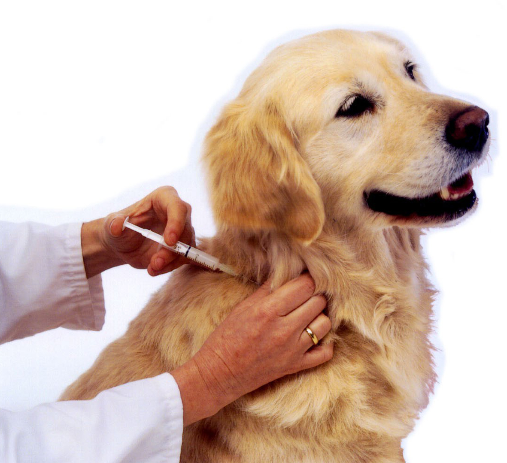
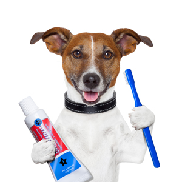
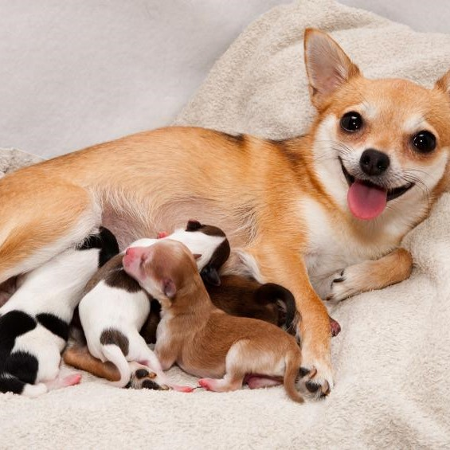

PAWMED
Vaccination
WSAVA recommends puppies and kittens are first vaccinated at 8–9 weeks of age, followed by a second vaccination 3-4 weeks later and a third given between 14 and 16 weeks, followed by a booster at one year.
Services Include:
Dental
A pet’s mouth does important work; the most obvious job is picking up food, chewing, and swallowing. Other jobs that one might not think of as readily are defense, grooming, breathing and cooling.
Services Include:
Medical Checkup

Our comprehensive CAT and DOG general physical wellness examination and vaccination programs are designed to prevent disease and prolong the lives of your companion animals.
Services Include:
Reproduction and Breeding
You may have your dog spayed or neutered. We will explain the behavior and health benefits and concerns. We can also screen your dog for breed-specific disorders if you are considering breeding.